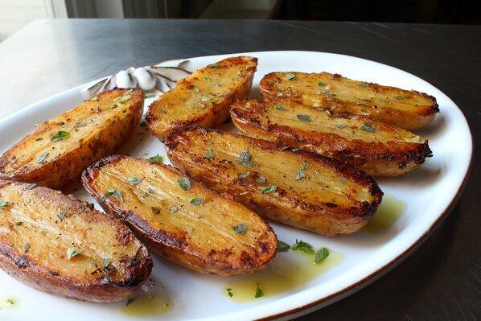
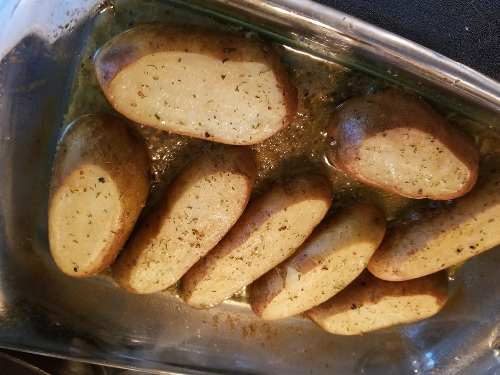

Roasted Lemon Pepper Potatoes
Originally from: Food Wishes

Ingredients
4 large russet potatoes
1 pinch freshly ground black pepper to taste
¼ teaspoon cayenne pepper, or to taste
1 pinch kosher salt to taste
1/4 cup olive oil, or more to taste
1 cup chicken broth
3 tablespoons fresh lemon juice, or to taste
2 teaspoons lemon zest
4 sprigs fresh oregano leaves, or more to taste
Directions
- Cut off long ends of potatoes so they will lay flat - cut in half lengthwise, rinse and dry.
- Place potatoes in oiled baking dish, brushing top with oil as well. Season with salt and peppers.
- Bake in 400° oven for 20 minutes. Remove and flip potatoes, let rest.
- Combine broth, lemon zest and juice. Pour over potatoes and brush any zest off top of potatoes. Stick oregano between potatoes.
- Return to oven and continue to roast flipping every 15 minutes, until desired doneness - 30 - 45 more minutes or so.
- Drizzle more oil and season as needed to serve.
Notes
-
2020-08-30 - made following recipe without oregano sprigs. Were decent - probably could have used additional roasting time to develop more crispness. 1 cup broth seemed a little much for amount of potatoes in 9 x 13 pan, but did mostly cook off, but may have increased cooking time.
